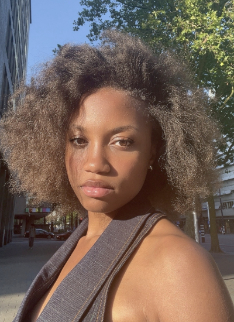

WELKOM
Over mij
Mijn naam is Dasjenka Lantveld en op mijn 26e heb ik besloten een nieuwe richting in te slaan. Ik woon in Rotterdam en volg momenteel de opleiding Software Developer op het Techniek College Rotterdam, met als doel om uiteindelijk als QA-tester aan de slag te gaan. Wat mij vooral aanspreekt binnen IT is het uitzoeken hoe iets werkt, waar iets misgaat en hoe het beter kan. Ik ben leergierig en kan behoorlijk vasthoudend zijn wanneer ik iets wil begrijpen. Als iets niet meteen lukt, wil ik juist weten waarom en blijf ik ermee bezig totdat het kwartje valt. Tijdens mijn opleiding wil ik mijn kennis verder uitbreiden, nieuwe vaardigheden ontwikkelen en ontdekken waar ik mezelf binnen de IT nog verder in kan ontwikkelen.
